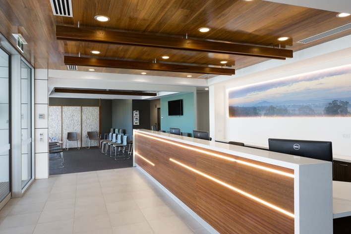

Genuine care. Clinical excellence.
Four GP-led general practices across Canberra, built so that doctors want to stay for their whole careers — and patients get the care that makes possible.
Two ways in
This site is about YourGP as a group. If you are booking an appointment, each practice runs its own site — that is where you want to be.
Looking for a GP?
We have practices at Crace, Denman Prospect, Lyneham and Garema Place in the city, plus dedicated skin cancer and vasectomy services. Each has its own site for appointments, fees, doctors and opening hours.
Are you a GP?
We built YourGP around a simple idea: give doctors the services and facilities we would want to receive ourselves. Rooms with windows, real nursing and admin support, and the freedom to practise your way.
Care · Excellence · Kaizen
Three things shape how we work. Every clinic we run, and the way we treat the doctors in them, comes back to these.
Caring
We tell the truth kindly, even when it is uncomfortable.
Excellence
We do what we say we will do, on time, to the highest standard.
Kaizen
Continuous improvement. We experiment, learn fast, and get a little better every day.
The best medicine happens in a long-term relationship
Good care depends on your GP knowing who you are, your history, and what matters to you. That relationship takes years to build — which is why we spend so much effort making YourGP somewhere doctors want to stay.
Many of our GPs have looked after the same families for decades. Some are now caring for a fourth generation. Everything else we do — the rooms, the nursing team, the systems — exists to protect that relationship.

A practice worth committing to
We are always glad to hear from excellent GPs — whether you are already practising in Australia or thinking about moving here from the UK. Tell us a little about yourself and we will send you our information pack.
Express your interestOr read the detail first: Australian GPs · UK GPs